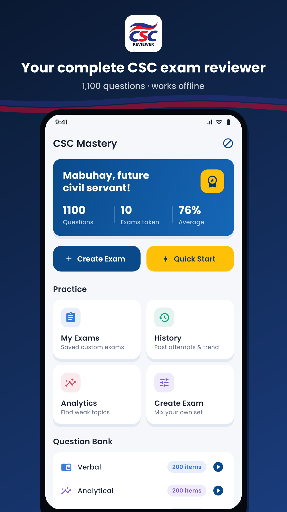
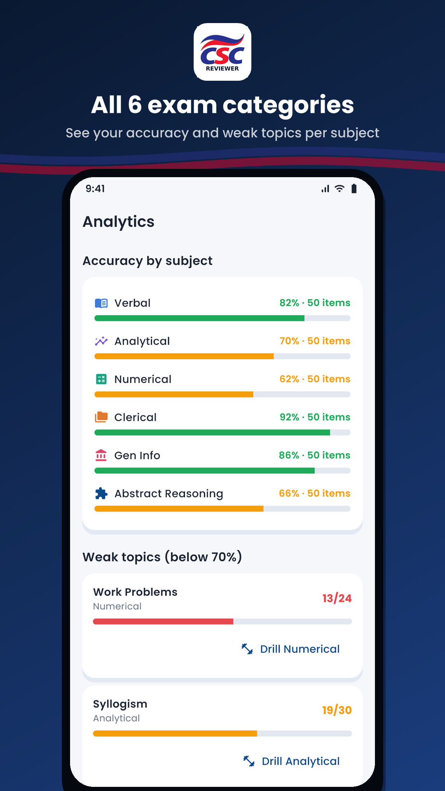
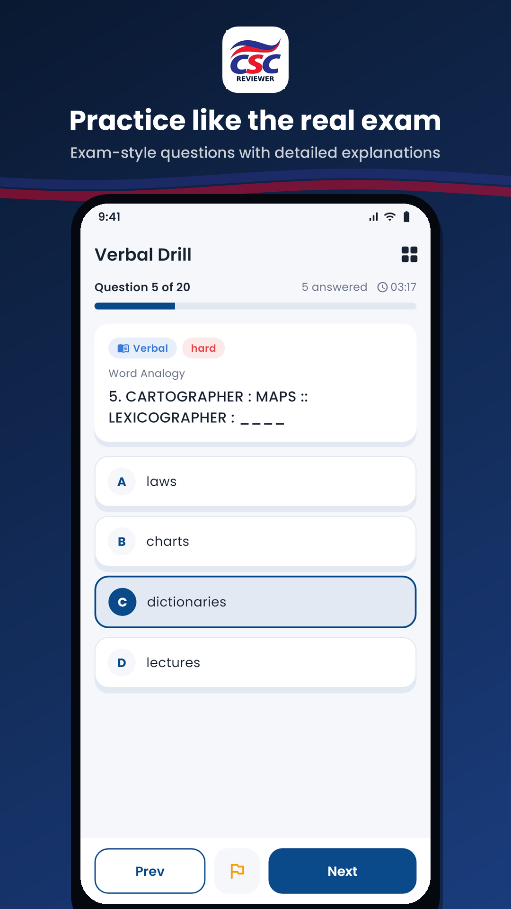
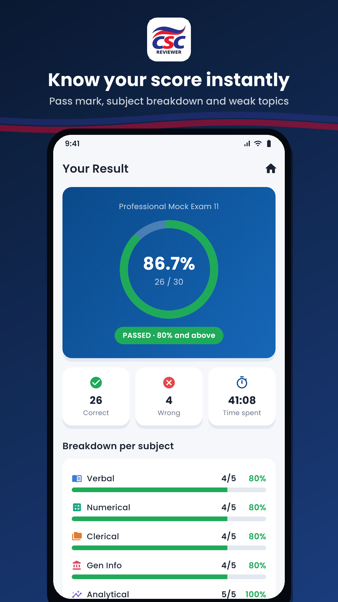
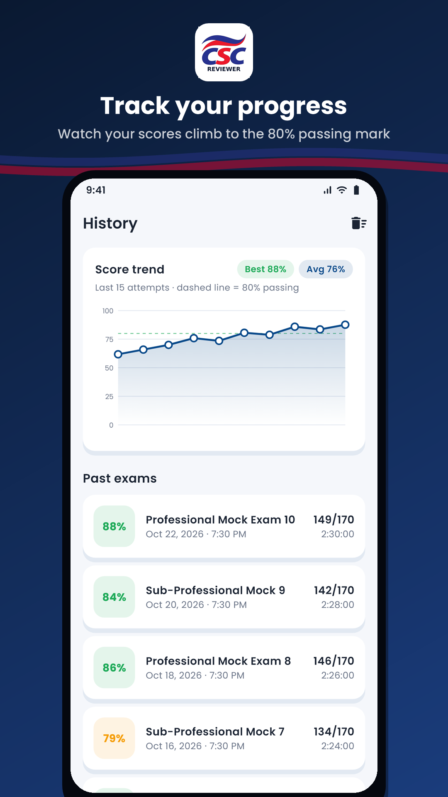
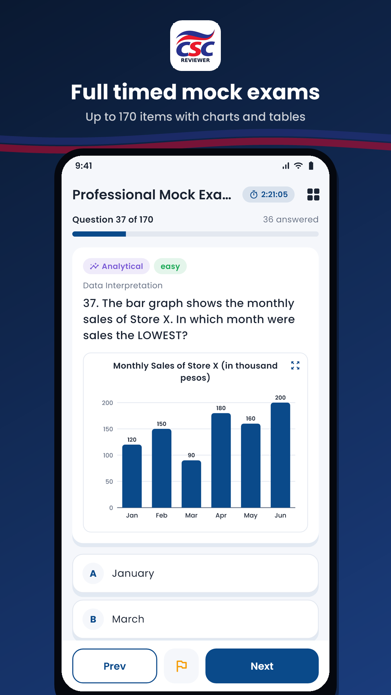

CSC Mastery: Exam Reviewer
Civil Service Exam reviewer: 1,100 questions, mock exams and explanations.
About the app
Preparing for the Philippine Civil Service Examination? CSC Mastery helps you review smarter with 1,100 exam-style practice questions, full timed mock exams, and a clear explanation for every answer.
Whether you are taking the Professional or Sub-Professional level, CSC Mastery lets you practice anytime, track your progress, and focus on the topics you need most.
Screenshots






Features
1,100 practice questions in 6 categories
- Verbal Ability – grammar, vocabulary, analogies, sentence completion, paragraph organization, reading comprehension and Filipino
- Numerical Ability – number series, fractions, percentages, ratios, age, work, mixture, distance and interest problems
- Analytical Ability – logical reasoning, coding, syllogisms, assumptions, conclusions and data interpretation
- Clerical Ability – spelling, filing rules, alphabetical filing and data checking
- General Information – the 1987 Constitution, RA 6713 (Code of Conduct and Ethical Standards for Public Officials and Employees), environmental laws, and current events
- Abstract Reasoning – figure series, analogies and pattern questions with clear visuals
Learn from every answer
Every question comes with a detailed explanation of why the correct answer is right and, where it helps, why the tempting wrong answers are wrong.
Full timed mock exams
Take mock exams of up to 170 items with a countdown timer, just like the real test. Flag questions for later, jump to any item, and submit when you are ready.
Create your own exams
Pick the subjects, number of items, time limit and difficulty (easy, medium, hard), then save your custom exam to retake anytime. Every retake draws a fresh random set.
Instant results
See your score right away, whether you reached the 80% passing mark, your accuracy per subject, and the topics where you need more practice.
Track your progress
Your exam history and score trend chart show how you are improving over time. The Analytics page shows your accuracy per subject and your weakest topics, with one tap to drill them.
Study without internet
All questions are built into the app, so you can review anywhere, even without a data connection. Your scores and history stay on your phone.
Clean, modern design
A simple, distraction-free design that works on both phones and tablets.
Start reviewing today and get one step closer to your civil service eligibility. Good luck, future civil servant!
Disclaimer
CSC Mastery is an independent review app. It is NOT affiliated with, endorsed by, or connected to the Civil Service Commission (CSC) of the Philippines or any government agency. All questions are original practice items written for review purposes. They are not actual examination questions. Passing the practice tests in this app does not guarantee passing the official examination.
For official information on the Civil Service Examination, including schedules, requirements and results, please visit the Civil Service Commission's official website: https://www.csc.gov.ph